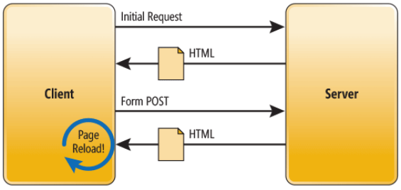
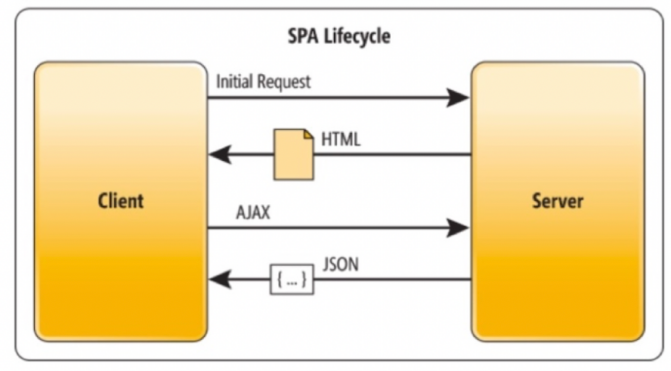

Une application SPA (pour Single Page Application) est une application web, composée de HTML, CSS et JavaScript, qui ne contient qu'une seule page. En réalité, ce nom peut être trompeur : il est préférable de s'imaginer qu'une SPA ne contient en réalité qu'un seul fichier HTML, le fichier index.html. Pour autant, notre site ou application peut proposer plusieurs pages, au sens où un utilisateur l'entend. Mais alors, comment ça fonctionne ?
Dans une application web classique, le fonctionnement est le suivant :
Le client – c'est-à-dire l'utilisateur à travers son navigateur – effectue une requête initiale vers le serveur. Par défaut, le serveur va renvoyer en réponse à cette requête du code HTML à afficher. Dans le cas de cette requête initiale, c'est le fichier index.html.
Chaque requête suivante, qu'il s'agisse du clic sur un lien ou de l'envoi d'un formulaire par exemple, va déclencher une nouvelle requête vers le serveur qui va répondre avec du nouveau contenu HTML représentant la ressource demandée.
Chaque nouvelle requête vers le serveur entraîne alors un rechargement complet de la page pour pouvoir afficher le nouveau contenu HTML présent dans la réponse. C'est ce qu'on appelle une MPA (ou Multiple Page Application), puisque chaque requête va afficher un nouveau contenu HTML, une nouvelle "page".
En SPA, le fonctionnement est un peu différent.
On retrouve la requête initiale vers le serveur qui retourne bien du contenu HTML, le contenu de notre index.html, qui représentera notre single page.
Toutes les requêtes qui seront effectuées par la suite sont des requêtes HTTP un peu spéciales : ce sont des requêtes AJAX, pour Asynchronous JavaScript and XML. Celles-ci sont traitées en arrière-plan par JavaScript de manière asynchrone. Le serveur va alors répondre non pas avec du code HTML, mais avec des données au format XML (comme le dit l’acronyme AJAX), ou au format JSON, ce dernier étant plus largement adopté de nos jours.
XML et JSON sont des formats de données standardisés qui permettent de structurer un ensemble complexe de données. Ils sont conçus pour avoir une très bonne compatibilité avec d'autres systèmes, et peuvent s'interfacer très facilement avec d'autres langages. JSON en particulier est dérivé de la notation objet de JavaScript, ce qui permet de passer très facilement des données d'un format JSON à JS, pour qu'elles puissent être traitées.
Une requête AJAX ne va pas automatiquement déclencher un rechargement de page. Il est possible depuis JavaScript de lire la réponse d'une telle requête et de récupérer les données contenues dans cette réponse pour les traiter (toujours en JavaScript). Grâce à l'API DOM, il est alors très facile de déclencher la mise à jour d'une portion de page pour afficher les données reçues.
See the Pen Untitled by OpenSpirit (@OpenSpirit) on CodePen.
Cet exemple, écrit pour le moment en JavaScript vanilla, représente une requête AJAX et une mise à jour de la liste des produits contenant le résultat JSON de la requête. Nous n'avons pas eu besoin de recharger la page : nous avons seulement manipulé le DOM pour afficher notre liste de produits à l'écran. Ce mécanisme est au cœur du fonctionnement d'une application SPA.